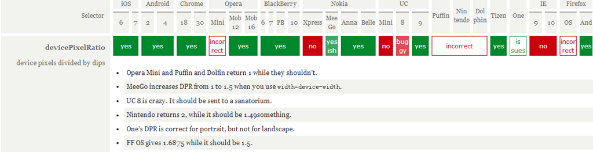
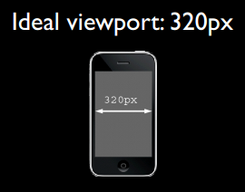
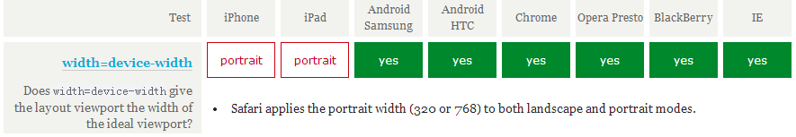
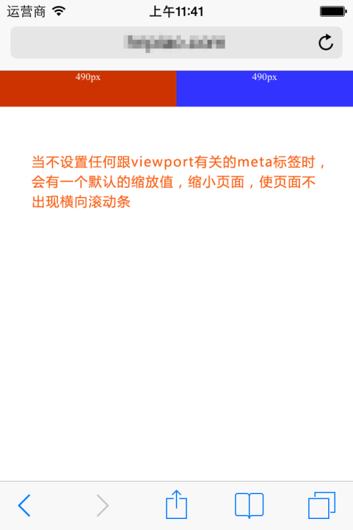

When restructuring or developing web pages on mobile devices, the first thing to understand clearly is the viewport on mobile devices. Only by understanding the concept of viewport and clarifying the use of the meta tag related to viewport can we better adapt or respond to mobile devices with various resolutions.
I. The concept of viewport
In simple terms, the viewport on a mobile device is the area on the device screen that can be used to display our web page. More specifically, it is the part of the browser (or a webview in an app) used to display the web page. However, the viewport is not limited to the size of the browser's visible area; it may be larger or smaller than the browser's visible area. By default, generally speaking, the viewport on a mobile device is larger than the browser's visible area. This is because the resolution of mobile devices is relatively small compared to desktop computers. Therefore, in order to properly display traditional websites designed for desktop browsers on mobile devices, browsers on mobile devices set their default viewport to 980px or 1024px (or other values, determined by the device itself). But the consequence is that the browser will have a horizontal scrollbar, because the width of the browser's visible area is smaller than the width of this default viewport. The following figure lists the default viewport widths of browsers on some devices.

II. 1px in CSS is not equal to 1px of the device
In CSS, we generally use px as the unit. In desktop browsers, 1 CSS pixel often corresponds to 1 physical pixel on the computer screen. This may create an illusion that pixels in CSS are the physical pixels of the device. But the actual situation is not so. Pixels in CSS are only an abstract unit. On different devices or in different environments, the device physical pixels represented by 1px in CSS are different. In web pages designed for desktop browsers, we don't need to be concerned about this, but on mobile devices, we must understand this point. In earlier mobile devices, screen pixel density was relatively low, such as the iPhone 3, whose resolution was 320x480. On the iPhone 3, one CSS pixel was indeed equal to one screen physical pixel. Later, with the development of technology, the screen pixel density of mobile devices became higher and higher. Starting from iPhone 4, Apple launched the so-called Retina screen, with resolution doubled to 640x960, but the screen size did not change. This means that on the same size screen, there are twice as many pixels. At this time, one CSS pixel is equal to two physical pixels. The same is true for mobile devices of other brands. For example, Android devices can be divided into different levels such as ldpi, mdpi, hdpi, xhdpi according to screen pixel density, and resolutions are also various. How many screen physical pixels one CSS pixel corresponds to on an Android device also varies from device to device, and there is no definitive answer.
Another factor that also causes changes in px in CSS is user scaling. For example, when the user zooms in the page by 100%, the physical pixels represented by 1px in CSS will also double; conversely, when the page is zoomed out by half, the physical pixels represented by 1px in CSS will also be halved. This point will be discussed later in the article.
In mobile browsers and some desktop browsers, the window object has a devicePixelRatio property. Its official definition is: the ratio of device physical pixels to device-independent pixels, that is, devicePixelRatio = physical pixels / independent pixels. The px in CSS can be regarded as the device-independent pixel, so through devicePixelRatio, we can know how many physical pixels one CSS pixel represents on that device. For example, on a Retina screen iPhone, the value of devicePixelRatio is 2, meaning 1 CSS pixel is equivalent to 2 physical pixels. However, it should be noted that devicePixelRatio still has some compatibility issues in different browsers, so we cannot fully rely on it for now. For specific situations, you can look atthis article。
Test results of devicePixelRatio:

III. PPK's theory about three viewports
The great ppkhas done a lot of research on viewport on mobile devices (First article，Second article，Third article), students who are interested can take a look. Many of the data and viewpoints in this article also come from there. ppk believes that there are three viewports on mobile devices.
First, the browser on a mobile device thinks it must allow all websites to display normally, even those not designed for mobile devices. But if the browser's visible area is used as the viewport, because mobile device screens are not very wide, websites designed for desktop browsers, when displayed on mobile devices, will inevitably be squeezed together due to the viewport being too narrow, and even the layout may be messed up. Perhaps someone will ask: aren't there many phones with very large resolutions now, such as 768x1024, or 1080x1920? Such phones should be able to display websites designed for desktop browsers without problems, right? As we said earlier, 1px in CSS does not represent 1px on the screen. The larger your resolution, the more physical pixels 1px in CSS represents, and the larger the value of devicePixelRatio. This is easy to understand, because your resolution has increased, but the screen size has not increased much. You must let 1px in CSS represent more physical pixels so that the size of a 1px object on the screen is similar to that on low-resolution devices; otherwise, it will be too small to see clearly. So on a device like 1080x1920, by default, you may only need to set the width of a div to a little over 300px (depending on the value of devicePixelRatio) to get the full screen width. Back to the topic: if the browser's visible area on a mobile device is set as the viewport, some websites will display improperly because the viewport is too narrow. Therefore, these browsers decide to set the viewport to a wider value by default, such as 980px, so that even websites designed for desktop can display normally on mobile browsers. ppk calls this browser default viewport the layout viewport. The width of this layout viewport can be obtained through document.documentElement.clientWidth.
However, the width of the layout viewport is larger than the width of the browser's visible area, so we also need a viewport to represent the size of the browser's visible area. ppk calls this viewport the visual viewport. The width of the visual viewport can be obtained through window.innerWidth, but it cannot be correctly obtained in Android 2, Opera Mini, and UC 8.


Now we already have two viewports: layout viewport and visual viewport. But the browser feels it is not enough, because more and more websites are designed separately for mobile devices, so there must also be a viewport that can perfectly adapt to mobile devices. The so-called perfect adaptation means: first, without requiring user zooming or horizontal scrolling, you can view all content of the website normally; second, the displayed text size is appropriate. For example, a paragraph of 14px text will not be too small to read clearly on a high-density pixel screen. Ideally, no matter what density screen or resolution, the size of this 14px text should be roughly the same. Of course, not only text, but also other elements such as images follow the same principle. ppk calls this viewport the ideal viewport, which is the third viewport - the ideal viewport of mobile devices.
The ideal viewport does not have a fixed size; different devices have different ideal viewports. All iPhones have an ideal viewport width of 320px, whether their screen width is 320 or 640. That is to say, in iPhone, 320px in CSS represents the width of the iPhone screen.


But Android devices are more complicated. There are 320px, 360px, 384px, and so on. As for the ideal viewport width of different devices, you can go tohttp://viewportsizes.comto take a look; it collects the ideal widths of many devices.
To summarize again:ppk divides the viewport on mobile devices into three types: layout viewport, visual viewport, and ideal viewport. Among them, the ideal viewport is the most suitable viewport for mobile devices. The width of the ideal viewport equals the screen width of the mobile device. As long as you set the width of an element in CSS to the width of the ideal viewport (in px), the element's width will be the device screen width, that is, the effect of 100% width. The significance of the ideal viewport is that no matter what resolution the screen is, websites designed for the ideal viewport can be presented perfectly to users without requiring manual zooming or horizontal scrollbars.
IV. Using meta tag to control viewport
The default viewport on mobile devices is the layout viewport, which is wider than the screen. But when developing websites for mobile devices, we need the ideal viewport. So how do we get the ideal viewport? That's where the meta tag comes in.
When developing mobile websites, one of the most common actions is to copy the following into our head tag:
<meta name="viewport" content="width=device-width, initial-scale=1.0, maximum-scale=1.0, user-scalable=0">
This meta tag makes the current viewport width equal to the device width, while also preventing the user from manually zooming. Different websites may have different requirements as to whether zooming is allowed, but making the viewport width equal to the device width is probably an effect everyone wants. If you don't set it this way, the default viewport wider than the screen will be used, which means a horizontal scrollbar will appear.
What exactly does this meta tag with name="viewport" contain, and what do each of its parts do?
The meta viewport tag was first introduced by Apple in its Safari browser to solve the viewport problem on mobile devices. Later, Android and major browser vendors followed suit and added support for meta viewport, and it has proven to be very useful.
In Apple's specification, meta viewport has 6 attributes (let's call the things in content attributes and values for now), as follows:
| width | Setlayout viewportwidth, a positive integer or the string "width-device" |
| initial-scale | Sets the initial zoom value of the page, a number that can be a decimal. |
| minimum-scale | The minimum zoom value allowed for the user, a number that can be a decimal. |
| maximum-scale | The maximum zoom value allowed for the user, a number that can be a decimal. |
| height | Setlayout viewportheight, this attribute is not important to us and is rarely used. |
| user-scalable | Whether the user is allowed to zoom, value is "no" or "yes"; no means not allowed, yes means allowed. |
These attributes can be used simultaneously, individually, or in combination. When using multiple attributes at the same time, just separate them with commas.
In addition, Android also supports the private property target-densitydpi, which indicates the density level of the target device and determines how many physical pixels 1px in CSS represents.
| target-densitydpi | The value can be a number or one of the strings high-dpi, medium-dpi, low-dpi, device-dpi. |
Note in particular that when target-densitydpi=device-dpi, 1px in CSS equals 1 physical pixel.
Because this property is only supported by Android, and Android has decided to deprecatetarget-densitydpithis property, we should avoid using it.
V. Setting the current viewport width to the ideal viewport width
To get the ideal viewport, you must set the width of the default layout viewport to the mobile device's screen width. Since width in meta viewport can control the layout viewport's width, we only need to set width to the special value width-device.
<meta name="viewport" content="width=device-width">
The following figure shows the test results of this line of code in major mobile browsers:

It can be seen that with width=device-width, all browsers can turn the current viewport width into the ideal viewport width. However, note that on iPhone and iPad, whether in portrait or landscape, the width is the ideal viewport width in portrait mode.
This approach looks like something anyone can do—even if you've never eaten pork, you've surely seen a pig run. Indeed, when developing web pages for mobile devices, whether or not you understand what viewport is, this one line of code may be all you need.
But you probably don't know that
<meta name="viewport" content="initial-scale=1">
this line of code can also achieve the same effect as the previous one, turning the current viewport into the ideal viewport.
Ha, surprised? Because theoretically, this line of code only prevents the current page from being zoomed, meaning the page stays at its natural size. So why does it have the same effect as width=device-width?
To understand this, you first need to figure out what the zoom is relative to. Since the zoom value here is 1, meaning no zoom, yet it achieves the ideal viewport effect, there can only be one answer: the zoom is relative to the ideal viewport. When the ideal viewport is zoomed to 100%, i.e., zoom value 1, don't you get the ideal viewport? In practice, this is indeed the case. The following figure shows the test results in major mobile browsers when settingwhether <meta name="viewport" content="initial-scale=1"> can turn the current viewport width into the ideal viewport width.

The test results show that initial-scale=1 can also turn the current viewport width into the ideal viewport width. But this time, IE on Windows Phone sets the width to the ideal viewport width in portrait mode regardless of whether it is portrait or landscape. However, this minor flaw is no longer important.
But what if width and initial-scale=1 appear together and conflict? For example:
<meta name="viewport" content="width=400, initial-scale=1">
width=400 means setting the current viewport width to 400px, while initial-scale=1 means setting the current viewport width to the ideal viewport width. So which command should the browser obey? The one written later? No. In this case, the browser takes the larger of the two values. For example, when width=400 and the ideal viewport width is 320, it takes 400; when width=400 and the ideal viewport width is 480, it takes the ideal viewport width. (Note: in UC9 browser, when initial-scale=1, no matter what value the width attribute has, the viewport width is always the ideal viewport width.)
Finally, to sum up: to set the current viewport width to the ideal viewport width, you can use either width=device-width or initial-scale=1, but each has a small flaw: iPhone, iPad, and IE do not distinguish between portrait and landscape orientations, always using the portrait ideal viewport width. Therefore, the most perfect approach is to write both together. In this way, initial-scale=1 solves the iPhone/iPad problem, and width=device-width solves the IE problem:
<meta name="viewport" content="width=device-width, initial-scale=1">
VI. More knowledge about meta viewport
1. About scaling and the default value of initial-scale
First, let's discuss the zoom issue. As mentioned earlier, zoom is relative to the ideal viewport. The larger the zoom value, the smaller the current viewport width, and vice versa. For example, on iPhone, the ideal viewport width is 320px. If we set initial-scale=2, the viewport width becomes only 160px. This is easy to understand: zoomed in by 1x, the original 1px becomes 2px. But 1px becoming 2px does not mean the original 320px becomes 640px; rather, with the actual width unchanged, 1px becomes the same length as the original 2px. So after zooming in by 2x, a width that originally needed 320px to fill now only needs 160px. Therefore, we can derive a formula:
visual viewport宽度 = ideal viewport宽度 / 当前缩放值 当前缩放值 = ideal viewport宽度 / visual viewport宽度
ps:The width of the visual viewport refers to the width of the browser's visible area.
Most browsers conform to this theory, but the native browser on Android and IE have some issues. Android's built-in WebKit browser behaves normally only when initial-scale=1 and no width attribute is set, meaning this theory basically doesn't apply to it. IE, on the other hand, completely ignores the initial-scale attribute; no matter what you set it to, initial-scale always behaves as 1.
Okay, now let's talk about the default value issue of initial-scale. That is, when this attribute is not written, what will its default value be? Obviously it won't be 1, because when initial-scale = 1, the current layout viewport width will be set to the width of the ideal viewport. But as mentioned earlier, the default layout viewport widths in various browsers are generally values like 980, 1024, 800, etc. No browser starts with the ideal viewport width, so the default value of initial-scale is definitely not 1. On Android devices, the default value of initial-scale seems to have no way to obtain it, or perhaps it simply has no default value; it only takes effect when you explicitly write it out. Let's not worry about it. Here we focus on the default value of initial-scale on iPhone and iPad.
According to tests, we can reach a conclusion on iPhone and iPad: no matter what width you set for the layout viewport, if you do not specify an initial scale value, iPhone and iPad will automatically calculate the value of initial-scale to ensure that the current layout viewport width is the width of the browser's visible area after scaling, meaning no horizontal scrollbar will appear. For example, on iPhone, if we do not set any viewport meta tag, the layout viewport width is 980px at this time, but we can see that the browser does not show a horizontal scrollbar; the browser shrinks the page by default. According to the above formula,current scale value = ideal viewport width / visual viewport width, we can conclude:
当前缩放值 = 320 / 980
That is, the current default value of initial-scale should be around 0.33. When you specify a value for initial-scale, this default value no longer takes effect.
In short, just remember this conclusion: On iPhone and iPad, no matter what width you set for the viewport, if no default scale value is specified, iPhone and iPad will automatically calculate this scale value to achieve the purpose of preventing a horizontal scrollbar on the current page (or in other words, making the viewport width equal to the screen width).



2. Dynamically changing the meta viewport tag
The first method
You can use document.write to dynamically output the meta viewport tag, for example:
document.write('<meta name="viewport" content="width=device-width,initial-scale=1">')
The second method
Change it via setAttribute
<meta id="testViewport" name="viewport" content="width = 380">
<script>
var mvp = document.getElementById('testViewport');
mvp.setAttribute('content','width=480');
</script>
A bug in the built-in browser of Android 2.3
<meta name="viewport" content="width=device-width"> <script type="text/javascript"> alert(document.documentElement.clientWidth); //弹出600，正常情况应该弹出320 </script> <meta name="viewport" content="width=600"> <script type="text/javascript"> alert(document.documentElement.clientWidth); //弹出320，正常情况应该弹出600 </script>
The tested phone's ideal viewport width is 320px. The first popup value is 600, but this value should be the result of the second line of meta tags; then the second popup value is 320, which is the effect achieved by the first line of meta tags. Therefore, in the built-in browser of Android 2.3 (perhaps all 2.x versions), overriding or modifying the meta viewport tag can produce very confusing results.
VII. Conclusion
Having said so much nonsense, it is still necessary to summarize something useful at the end.
First, if the meta viewport tag is not set, the default width value in mobile device browsers is 800px, 980px, 1024px, etc. In short, it is larger than the screen width. The unit px used for the width here refers to px in CSS, which is not the same as the px representing the actual physical pixels of the screen.
Second, every mobile device browser has an ideal width. This ideal width refers to the width in CSS and has nothing to do with the physical width of the device. In CSS, this width is equivalent to the width represented by 100%. We can use the meta tag to set the viewport width to that ideal width. If you don't know the ideal width of this device, you can use the special value device-width. At the same time, initial-scale=1 also has the effect of setting the viewport width to the ideal width. So, we can use
<meta name="viewport" content="width=device-width, initial-scale=1">
to get an ideal viewport (that is, the ideal viewport mentioned earlier).
Why do we need an ideal viewport? For example, a phone with a resolution of 320x480 has an ideal viewport width of 320px, while another phone with the same screen size but a resolution of 640x960 also has an ideal viewport width of 320px. Why should the ideal width of the phone with higher resolution be the same as that of the phone with lower resolution? This is because only in this way can the same website look the same or similar on devices with different resolutions. In fact, although there are so many phones of different types, brands, and resolutions on the market, their ideal viewport widths can be summarized as only a few like 320, 360, 384, 400, etc., all of which are very close. Similar ideal widths mean that a website designed for the ideal viewport of a certain device will not perform very differently, or even perform the same, on other devices.
Original address: https://www.cnblogs.com/2050/p/3877280.html
Click me to share notes
<p style="font-size:14px;">The note must be an extension of this article's content!</p><br> <p style="font-size:12px;"><a href="../tougao.html" target="_blank">Article submission, click here</a></p> <p style="font-size:14px;"><a href="./runoob-user-test-intro.html" target="_blank">How to get a registration invitation code</a></p> <h3 class="text-muted"><i class="fa fa-info-circle" aria-hidden="true"></i> Before sharing notes, you must <a href=".." class="runoob-pop">log in</a>!</h3> <p><a href="./runoob-user-test-intro.html" target="_blank">How to get a registration invitation code</a></p>